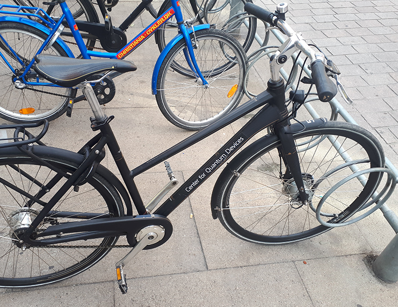

Alejandro Panza
I'm a software developer, currently working as a contractor
Some work-related projects:
Created a tool for visualizing multidimensional data for Microsoft Quantum Computing research
While I was working with a team in GenUI on a project to allow scientists to share experimental results in quantum computing research I noticed a possibility to improve how the researchers visualized and navigated the experimental data.
I created a prototype and showcased it to the research group in a general meeting in the Netherlands. The idea was very well received and resulted in a project that I worked on for a year with a small team which I lead. It ended up being a ‘featured project’ on the GenUI page.
Later I got the opportunity to work alongside one of the research teams located in Copenhagen, where I could get a better sense of what were their needs regarding visualizing the experimental data.
Also I got to ride the coolest bike I'll ever ride, courtesy of the Niels Bohr Institutet.
Can a bike get cooler than having a sticker that says 'Quantum' and having it for a legitimate reason ?
Created the concept and implemented a prototype of a workflow to browse and visualize scientific data:
For a Microsoft project to store data in DNA.